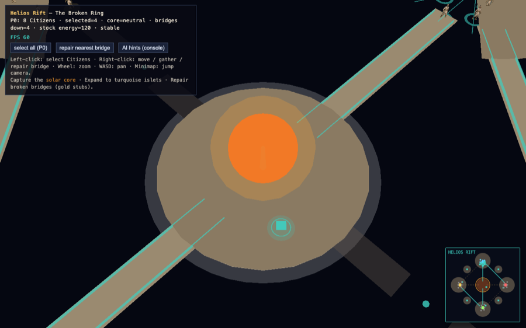
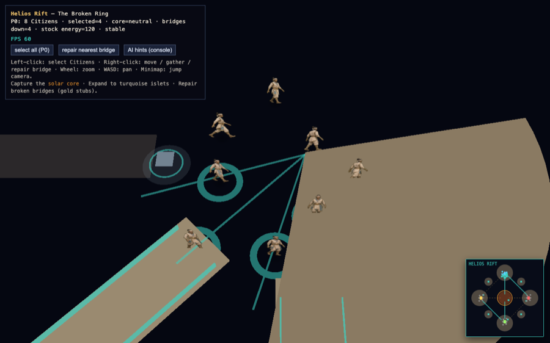
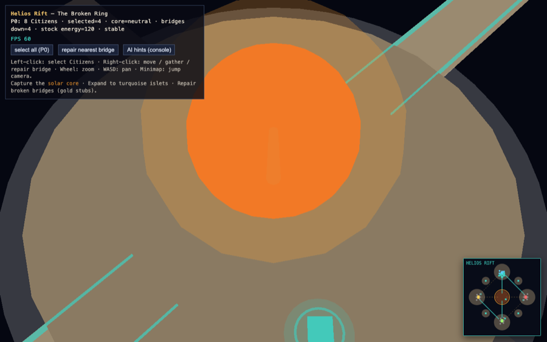
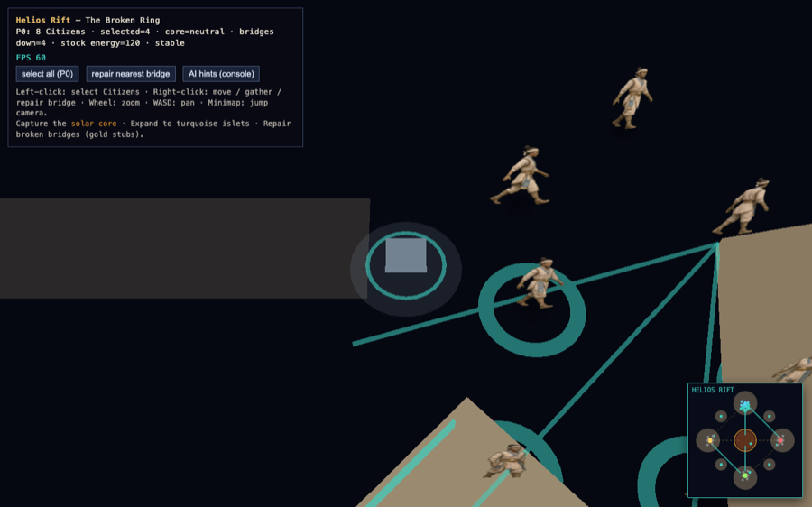
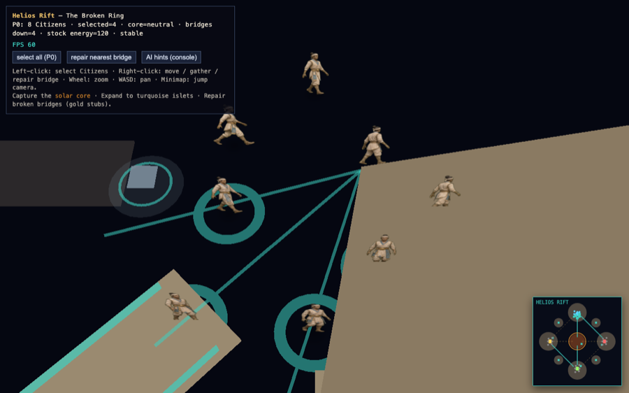

Status
Helios Rift Phase 1 is playable in the Chromium proof scene: 4-player ring spawns, pathfinding with repairable bridges, harvestable resources, solar-core capture objective, solar-flare hazard, and AI hint JSON. Lumen Basin and Orekhar Frontier remain registry stubs only.
Preview video
Overview → player start → resources → bridge lane → solar core (~18s).
Screenshots





iPad-first review checklist (honest scores)
| Criterion | Score | Notes |
|---|---|---|
| First 10s — where am I, resources, enemy approach, centre importance without minimap | 6/10 | Ring + orange core read at overview; P0 home obvious at start zoom. Enemy lanes (E/S/W spawns) and resource locations are not obvious without minimap or prior knowledge. |
| Touch readability — silhouettes for base / resources / bridges / core | 5/10 | Platforms and core disc are large enough. Citizens are small at gameplay zoom. Resource nodes are tiny teal squares; bridge stubs vs active bridges need stronger contrast at arm's length. |
| Visual theme — lost star machine vs grey rocks | 4/10 | Currently reads as tan geometry in void. Core glow + teal energy lines help; megastructure / dying-star art pass still required. |
| Bridge repair state obvious? | 6/10 | Minimap dashed vs solid lines are clear. In-world: active bridges have teal rails; broken segments are dark stubs — workable but subtle on iPad. |
| Gameplay loop / match fantasy | 7/10 | Ring chokepoints + core contest + expansions are structurally sound. Needs clearer telegraph of flare hazard and resource types. |
Strategic readability — next polish pass
- Spawn banners or faction color washes on home fragments (N/E/S/W) visible at default zoom
- Larger, typed resource silhouettes (matter / lumen / aether / energy) with distinct color + icon
- Broken-bridge scaffolding mesh + repair progress ring at bridge midpoint
- Solar-flare telegraph on core corona + screen-edge warning before hazard ticks
- Expansion islet callouts (corner diamonds) readable in overview without minimap
- Enemy approach vectors: subtle arrow decals on bridge lanes from rival spawns
Acceptance checklist (engineering)
| Criterion | Status |
|---|---|
| 4 player spawns | ✅ |
| Path graph + bridge gating | ✅ |
| 8 resource nodes + core node | ✅ |
| Expansion islets matter | ✅ |
| Solar core capture objective | ✅ |
| AI hints JSON API | ✅ |
| Distinct from flat grass proof | ✅ ring void + bridges + flares |
Run locally (humans)
cd SunfoldGreenfield-threejs-wkwebview/ThreeRuntime npm run build:labs npx --yes serve assets/citizens -p 4177 # http://localhost:4177/helios-rift-proof
Controls: left-click select · right-click move/gather/repair · wheel zoom · WASD pan · minimap jump.
Architecture pointer
Data-driven RTS map framework under ThreeRuntime/src/rts-maps/ — MapDefinition drives terrain, spawns, resources, objectives, bridges, hazards, and AI hints. Orchestrator: createRtsMapWorld(mapId, scene). Helios Rift is map 1; Lumen Basin / Orekhar are stubs.
- Theme: shattered orbital ring around a dying star
- Layout: 4 ring fragments (N/E/S/W), central solar core, 4 corner expansion islets, 8 bridges (4 broken at start)
- Mechanics: repairable bridges, core capture bonus, periodic solar flares disabling core bridges
Suggested ChatGPT prompt
Critique this Helios Rift map as an iPad-first AoE-style RTS — does it create a compelling match? Review the screenshots and video on this page. Comment on first-10-second readability without minimap, touch-scale silhouettes, bridge/core clarity, whether the ring layout creates interesting chokepoints, and what art/readability pass would most improve the fantasy of a broken orbital civilization.